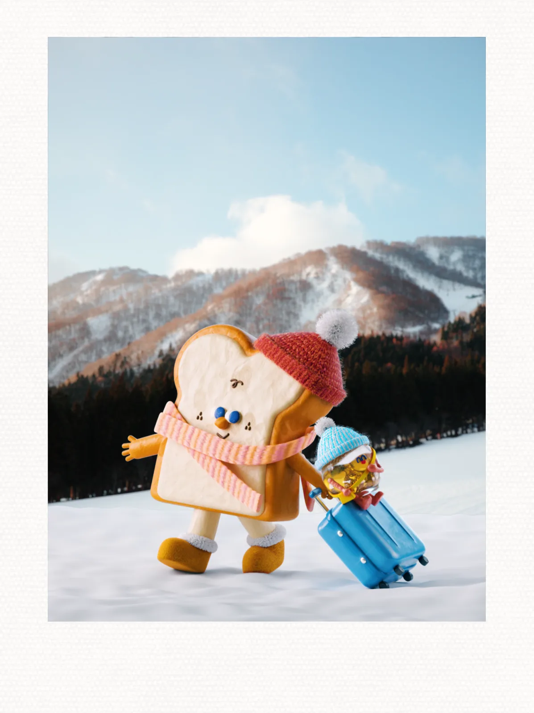
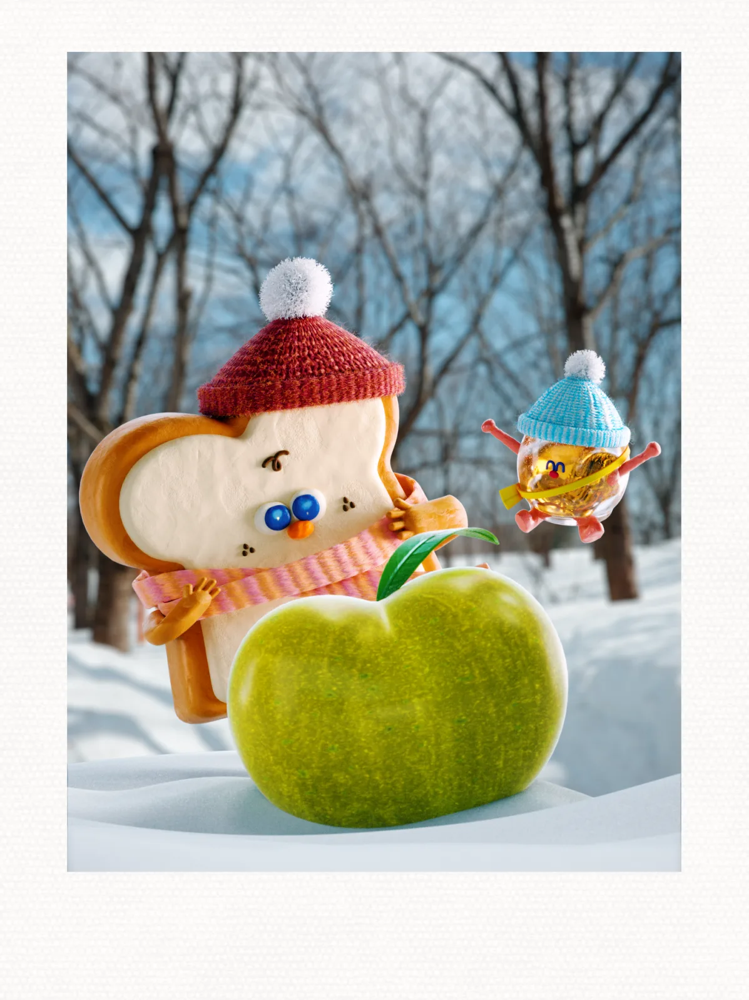
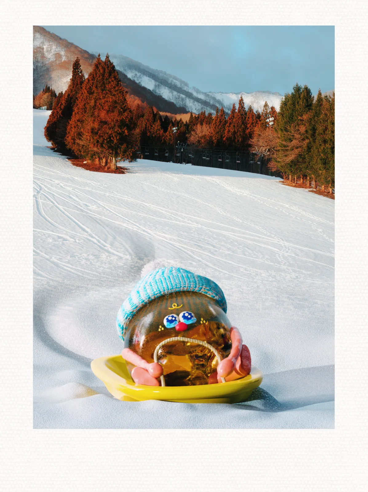
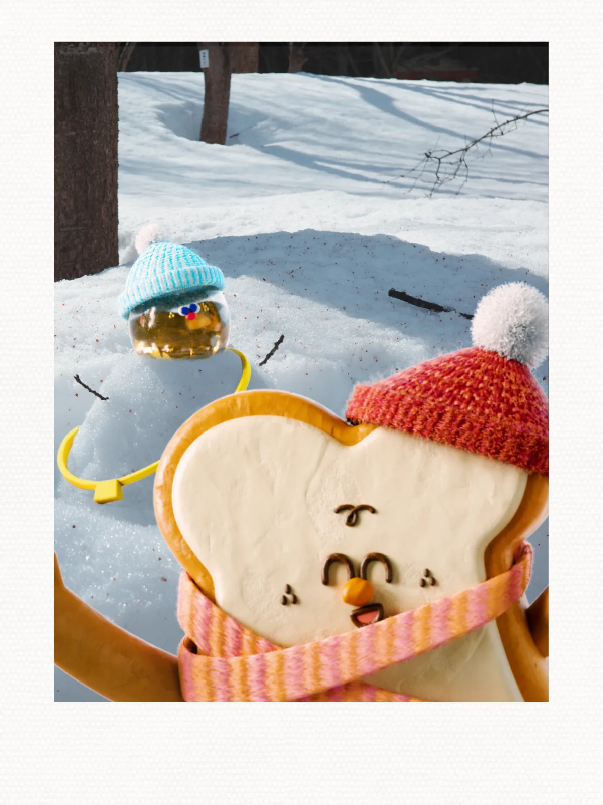

A Journey in Tohoku❄️
I took a trip to Tohoku with my family in March.
ToastBaby and Little Jam want to share some travel photos with you✨
• Seeing snow for the first time!
• Eating green apples in Aomori 🍏
• Building my first snowman !!
• Snow tubing (was so scared at first!）
- Type
- Personal work
- Year
- 2026



